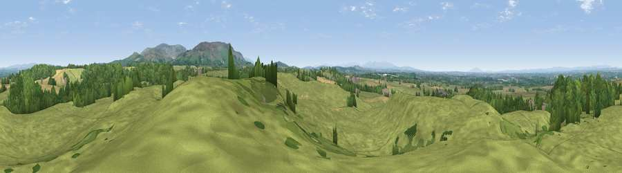

Viewpoint near How Mill
#9579 in England · top 37% of its area beats it · near How MillWhere it is
The exact computed spot (NY 51325 56275). Click the marker for map links.
The view, rendered

A 360° render of this exact spot computed from the terrain model, tree cover and land cover — summer colours, afternoon light, calibrated against photographs of famous viewpoints. Real trees, hedges and buildings will differ in detail.
The panorama
Grey silhouette: terrain skyline in each direction (720 bearings, Earth curvature and refraction included). Dashed green: skyline with trees (+15 m) and buildings (+8 m) as obstacles. Blue strip: how far the ground is visible on each bearing.
Where the view opens
Wedge length = distance to the farthest visible ground on that bearing (vegetation-aware). Rings at 10, 25 and 50 km.
What fills the view
74% grassland · 18% woodland · 8% cropland ·
Angular shares of the visible panorama (visual magnitude), not map area. Landscape diversity 0.33 (0–1 Shannon).
Key numbers
More beautiful places nearby
The staircase of upgrades: each row has a higher view potential than everything closer. Driving times are estimates from straight-line distance, calibrated against real road routing — check an actual route before setting out.
| Place | Direction | Drive | Score |
|---|---|---|---|
| Viewpoint near Heads Nook | SSW · 1 km | ~4 min | 69.4 |
| Viewpoint near Castle Carrock | ESE · 4 km | ~10 min | 75.2 |
| Hespeck Raise | ESE · 5 km | ~11 min | 75.8 |
| Viewpoint near Farlam | E · 6 km | ~12 min | 76.5 |
| Viewpoint near Cumrew | SE · 6 km | ~13 min | 78.8 |
| Barrock Fell | SSW · 10 km | ~19 min | 81.1 |
| Blencathra | SSW · 34 km | ~52 min | 81.7 |
| Viewpoint near Watermillock | S · 36 km | ~54 min | 82.6 |
54.89882, -2.76053 · source: screening · position refined by local search. Computed location — check access rights before visiting.